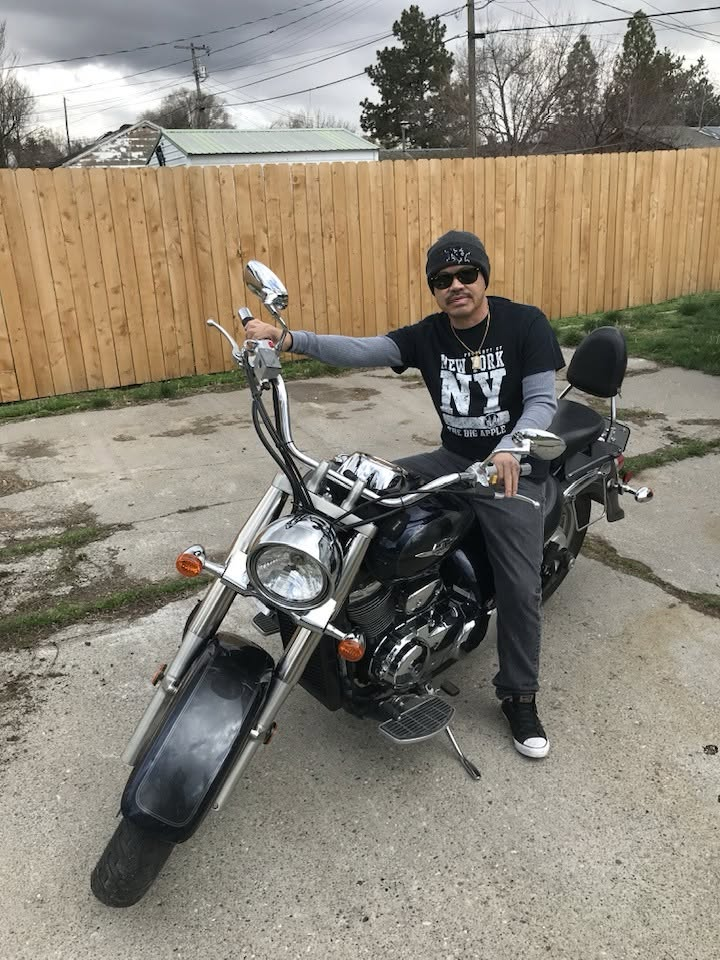

About Michael
Born in Xaignabouli, Province in Laos, Michael grew up in the Muang Phiang area in a small village surrounded by rice fields and farmland. His early life was very different from the life he would eventually build in the United States. Growing up in a rural community he lived a simpler life with farming and enjoying the countryside.
In seventh grade, he moved to the United States, beginning a major transition in his life. Adjusting to a new country was a significant culture shock, with differences in language, culture, food and everyday life. He spent years living in Massachusetts and many years in Idaho while adapting to his new life. Learning English was an important part of this transition, and school provided much of his early experience with the language.
Before becoming a long-haul truck driver, Michael worked several different jobs, including delivering newspapers, various factories, an auto shop, and worked a long time at Clear Springs, a fish factory. Eventually, he became interested in truck driving after seeing friends, and family members work in the industry. He saw trucking as a good opportunity to earn a living.
After becoming a truck driver, he came to enjoy the freedom and travel that came with being on the road. Over the years, he traveled through many parts of the United States. Utah became one of the preferred routes because of its open roads, beautiful scenery, and enjoyable driving conditions.
Outside of work, Michael has a strong interest in cars and motorcycles. His interest in these began naturally when he was young. He eventually purchased his first sports car from a friend and owned multiple motorcycles.
Among the experiences he is most proud of are raising his children and returning to Laos after many years away. His recent trip back was especially meaningful, allowing him to enjoy the food, culture, and sightseeing. The trip was one of his most memorable experiences and a meaningful return to where he grew up.